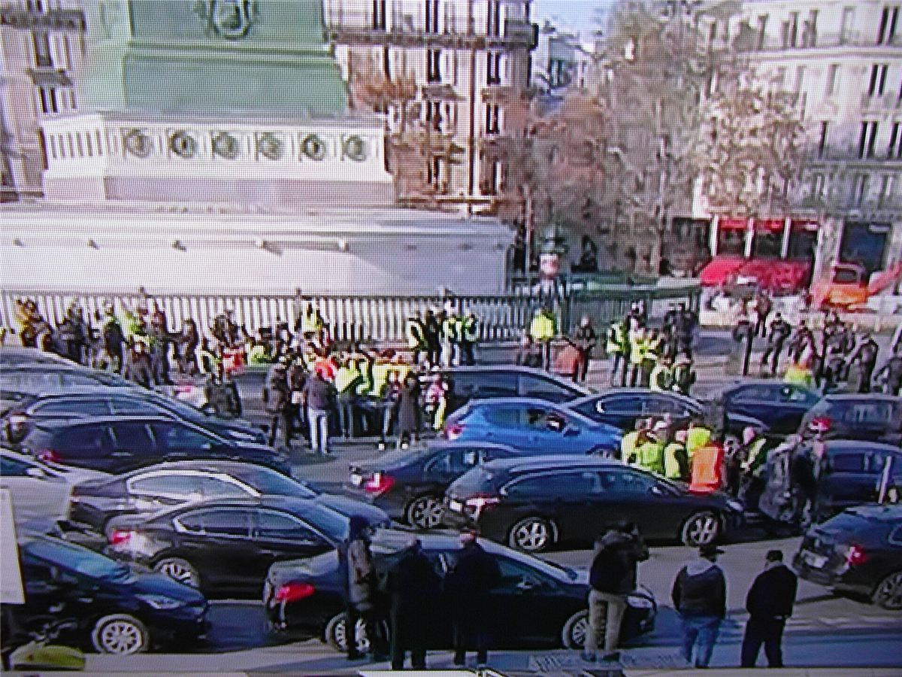

Mamie n'aurait jamais cru voir ça : des gens qui n'avaient jamais manifesté de leur vie, aides-soignantes, artisans, retraitées, intérimaires, mères seules, plantés jour et nuit sur des ronds-points de zones commerciales, autour d'un brasero. Pas de syndicat, pas de parti, pas de chef. Les Gilets jaunes ont été le plus grand mouvement d'auto-organisation populaire en France depuis Mai 68, et l'un des plus réprimés.
Ce dossier raconte le mouvement d'un point de vue libertaire : ce qu'il a eu d'autonome et de neuf, mais aussi ses ambiguïtés, que les anarchistes ont beaucoup discutées. Le mouvement n'était pas anarchiste, et ne s'en est jamais réclamé.
Le prix de l'essence, et tout le reste
En 2018, le gouvernement d'Emmanuel Macron augmente les taxes sur les carburants au nom de la transition écologique. La même année, il a supprimé l'impôt sur la fortune. Pour des millions de gens qui vivent loin des centres-villes, sans transports en commun, la voiture est indispensable pour aller travailler, faire les courses, emmener les enfants. Chaque plein devient une humiliation.
- En mai 2018, Priscillia Ludosky lance une pétition en ligne pour la baisse des prix du carburant. Elle recueillera plus d'un million de signatures.
- À l'automne, des vidéos de colère circulent sur Facebook. Un chauffeur routier, Éric Drouet, appelle à bloquer le pays le 17 novembre.
- Le signe de ralliement s'impose tout seul : le gilet jaune que chaque automobiliste doit avoir dans sa voiture.
17 novembre 2018 : l'acte I
Ce samedi-là, selon le ministère de l'Intérieur, près de 290 000 personnes occupent plus de 3 000 lieux : ronds-points, péages, entrées de zones commerciales, dépôts de carburant. Personne ne les a organisés d'en haut. Beaucoup restent : les ronds-points deviennent des campements, avec des cabanes en palettes, des braseros, des tables, des cantines. On y passe Noël.

Les samedis
Chaque samedi devient un « acte ». Les Gilets jaunes ne déclarent pas leurs parcours, montent sur les Champs-Élysées, les beaux quartiers, les centres-villes, là où l'on ne manifeste jamais. Le 1er décembre, l'acte III tourne à l'émeute à Paris, jusqu'à l'Arc de Triomphe ; au Puy-en-Velay, la préfecture est incendiée. Le pouvoir prend peur.
Le gouvernement recule
- Le 4 décembre, le Premier ministre suspend la hausse des taxes sur les carburants ; le lendemain, elle est retirée du budget 2019.
- Le 10 décembre, Emmanuel Macron annonce à la télévision 100 € de plus par mois au niveau du SMIC (en réalité surtout par la prime d'activité), des heures supplémentaires sans impôts, et l'annulation de la hausse de la CSG pour les petites retraites. Il refuse de rétablir l'impôt sur la fortune.
- Puis il lance le « grand débat national », de mi-décembre 2018 à mi-mars 2019 : des réunions encadrées par les maires et le gouvernement, pour reprendre la main sur la parole.
Pour la première fois depuis longtemps, un mouvement social obtenait quelque chose. Mais il ne demandait plus seulement de l'argent : il demandait de pouvoir décider.
La répression
Le mouvement a affronté une répression d'une ampleur rare dans l'histoire récente des manifestations en France.
- À Marseille, le 1er décembre 2018, Zineb Redouane, 80 ans, est touchée au visage par une grenade lacrymogène alors qu'elle ferme ses volets, au quatrième étage. Elle meurt le lendemain. Le policier qui a tiré a été identifié, mais n'a pas été sanctionné.
- Selon le recensement du journaliste David Dufresne, à la mi-avril 2019, on compte déjà plus de 600 blessés, dont 23 personnes éborgnées et 5 mains arrachées, par des tirs de lanceurs de balles de défense (LBD) et des grenades explosives.
- Entre novembre 2018 et novembre 2019 : plus de 12 000 interpellations, plus de 10 000 gardes à vue, environ 3 100 condamnations, dont 400 peines de prison ferme avec incarcération immédiate.
- En avril 2019, une loi dite « anticasseurs » renforce les interdictions de manifester et punit le fait de se couvrir le visage.
C'est dans ces cortèges que les street medics et les legal teams se sont multipliés partout en France (voir le Guide de manif).
L'essoufflement
Au printemps 2019, les cortèges diminuent. Les ronds-points sont évacués un à un, les cabanes détruites. Les plus tenaces continuent : assemblées, manifestations, présence dans les grèves contre la réforme des retraites de l'hiver 2019-2020. Les confinements de 2020 mettent le mouvement à l'arrêt. Il n'a jamais tout à fait disparu.
Chronologie
- Mai 2018Pétition de Priscillia Ludosky contre le prix des carburants.
- 17 nov. 2018Acte I : des milliers de ronds-points et de blocages.
- Fin nov. 2018Appel des Gilets jaunes de Commercy à former des assemblées populaires.
- 1er déc. 2018Acte III : émeutes à Paris ; Zineb Redouane blessée à Marseille, elle meurt le lendemain.
- 4-5 déc. 2018Suspension puis retrait de la hausse des taxes sur les carburants.
- 10 déc. 2018Annonces d'Emmanuel Macron.
- Déc. 2018 - mars 2019Grand débat national.
- Janv. 2019Première Assemblée des assemblées à Commercy.
- Avril 2019Loi « anticasseurs » ; deuxième Assemblée des assemblées à Saint-Nazaire.
- Hiver 2019-2020Des Gilets jaunes dans la grève contre la réforme des retraites.
Dans ce dossier
- Ronds-points, cabanes et Assemblée des assemblées : comment le mouvement s'organisait sans chefs.
- Ce que les libertaires en retiennent : l'analyse après coup.
Sources et pour aller plus loin
Lire
- Le fond de l'air est jaune. Comprendre une révolte inédite, collectif, Seuil, 2019.Des historiennes, sociologues et militants à chaud, sur le moment.
- In girum. Les leçons politiques des ronds-points, Laurent Jeanpierre, La Découverte, 2019.Ce que les ronds-points disent de la politique « par en bas ».
Regarder
- Un pays qui se tient sage, David Dufresne, 2020Le documentaire sur les violences policières pendant le mouvement.
Sur le web
- Le mouvement des Gilets jaunes sur WikipédiaChronologie, revendications, chiffres de la répression.
- La mort de Zineb RedouaneUne affaire emblématique des violences policières.
Dossier rédigé par la bande à Mamie à partir de travaux d'historiennes et d'historiens et de textes des mouvements concernés. Libre de reproduction.